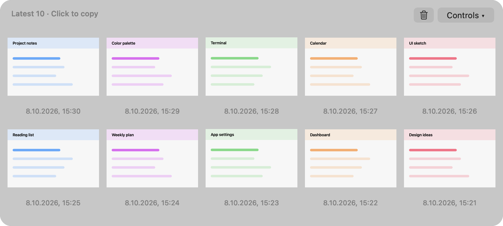
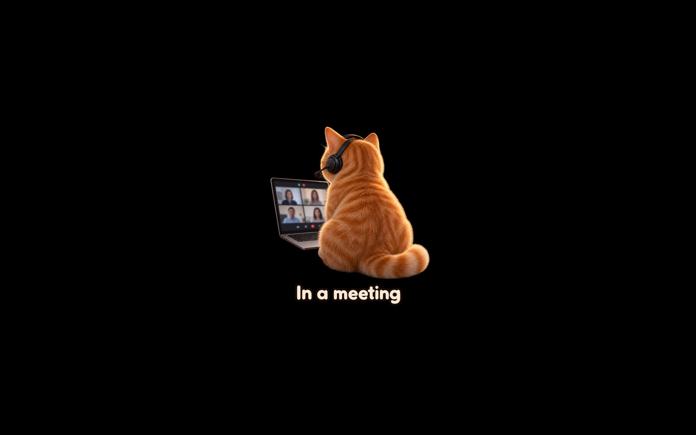
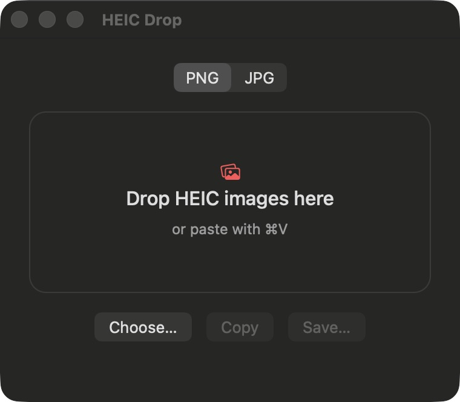

Vibe Coded Software
Small macOS apps that make my life easier. All of them are vibe coded.
Recent Screenshots
Your last ten screenshots in a shelf at the top of your screen. Hover to reveal it, then click an image to copy it.
View on GitHub ↗
Meeting Mode
One click to cover desktop icons and widgets with a clean, black desktop. Add a meeting cat if you like, then restore your desktop when you’re done.
View on GitHub ↗
HEIC Drop
Drop HEIC images to convert them to PNG or JPG, then copy or save the results. Everything stays on your Mac.
View on GitHub ↗